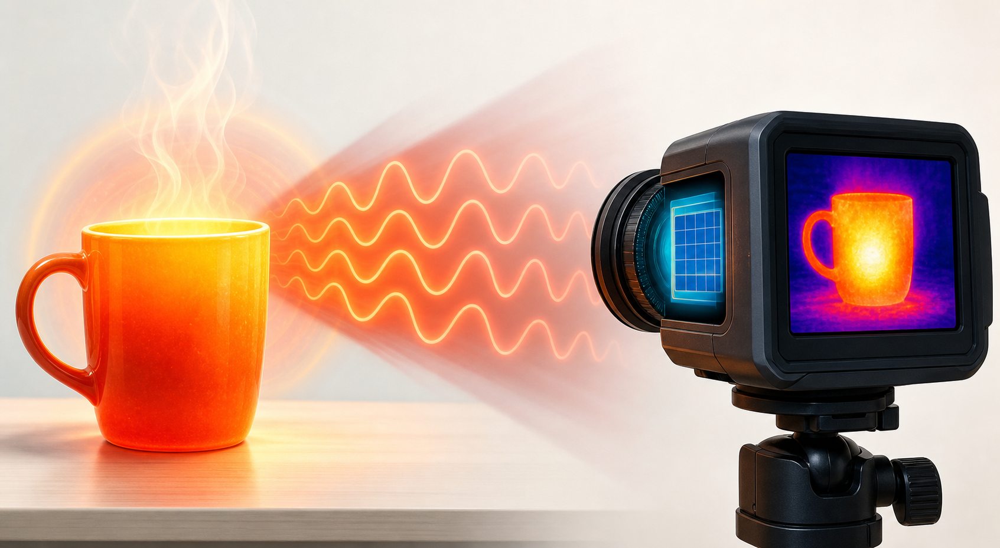

Wavelength
Infrared wavelengths are longer than visible light. Longer wavelengths mean wave crests are farther apart.
Electromagnetic Waves Project
Infrared radiation is invisible electromagnetic energy with wavelengths longer than red visible light and shorter than microwaves. We cannot usually see it, but we often feel it as heat.
Name
The word infrared means “below red.” On the electromagnetic spectrum, infrared starts just past the red edge of visible light. It is “below” red because it has lower frequency and lower photon energy than visible red light.
Location on the EM Spectrum
Properties and Adjustable Scale
Infrared wavelengths are longer than visible light. Longer wavelengths mean wave crests are farther apart.
Frequency decreases as wavelength increases. The website calculates it with frequency = speed of light ÷ wavelength.
Infrared photons have less energy than visible or ultraviolet photons, which is why infrared is non-ionizing.
Objects near room temperature emit much of their thermal radiation in infrared wavelengths.
How Detection Works
A thermal camera does not “see heat” directly with human eyes. Its sensor detects infrared radiation, then software maps stronger infrared emission to brighter colors.
42°C object: warm enough to glow brightly on a thermal image.

Discovery
Herschel split sunlight into colors using a prism.
He measured temperature in different parts of the spectrum.
The thermometer just beyond red became warmest, even though no visible color was there.
That invisible energy became known as infrared radiation.
Benefits
Many TV remotes send coded pulses of near-infrared light to a receiver.
Firefighters, electricians, and inspectors use infrared cameras to find heat patterns, hidden hot spots, or insulation problems.
Infrared telescopes observe cooler stars, dust clouds, and objects hidden behind space dust.
Infrared tools help monitor temperature, image blood flow patterns, and identify molecules using infrared spectroscopy.
Harms and Disadvantages
Powerful infrared heaters, lamps, furnaces, or lasers can heat skin enough to burn it.
The eye can absorb infrared radiation as heat. Strong sources can damage the cornea, lens, or retina depending on wavelength and intensity.
Because most infrared is invisible, a person may not blink or look away from a dangerous IR source quickly enough.
Infrared remote signals usually need a clear path and can be blocked by walls, people, or objects.